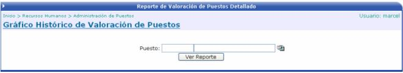
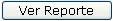
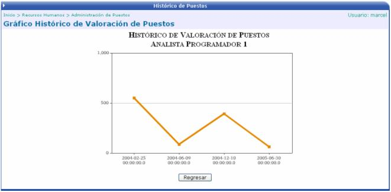

El gráfico que se presenta en esta opción muestra la valoración histórica que ha tenido un determinado puesto. El usuario solamente debe de seleccionar el puesto deseado y presionar el botón “Ver Reporte”

Al presionar el botón

se presenta el gráfico del puesto seleccionado, según fecha de vigencia y el puntaje obtenido.
